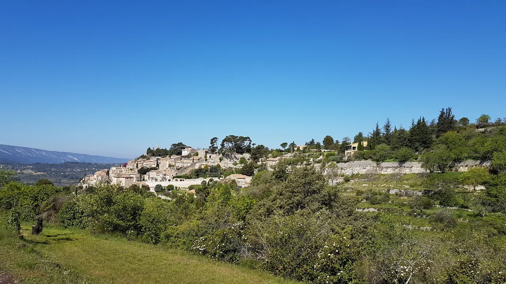
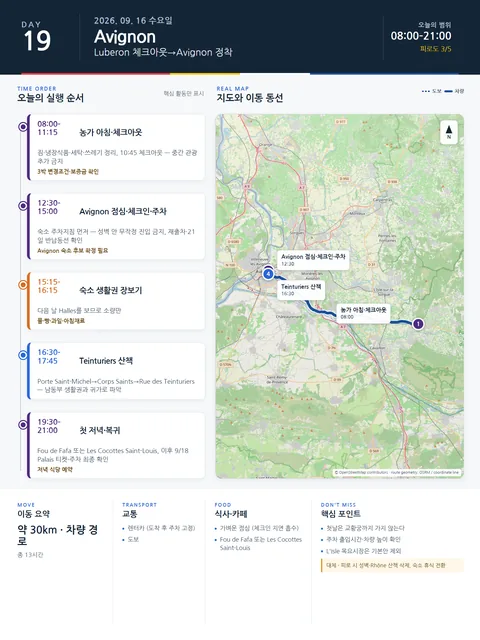

Day 19 · 9/16 수 · Avignon

거점 이동양쪽 챕터
- 핵심 실행
- 농가 체크아웃→Avignon 정착
- 권장 출발
- 10:30 체크아웃
- 완충
- 이동·주차·체크인 90분
시간표
이 날은 원고에 시각표가 없다. 구간 일정은 일정 한눈에 에 있다.
이 날의 메모
Luberon
농가 체크아웃, 아비뇽 이동과 정착
선택 대안 — 삭제된 농가 전일에서 보존
농가에서 더 쉬고 싶으면 9/14의 Goult/Bonnieux 또는 9/15의 Ménerbes/Oppède를 삭제해 반나절을 되돌린다. 아래 두 능선마을 정보는 그때 한 곳만 고르는 자료다.
A안 — Ménerbes: 가장 균형 좋은 선택
성격: 능선 위 생활마을, 포도밭 전망, 식당·카페·와인 접근이 상대적으로 좋다.
꼭 해볼 것 - 아래쪽 주차 후 능선 방향으로 천천히 오르기 - 남북 양쪽 전망을 비교하기 - Maison de la Truffe et du Vin의 정원·와인바 운영을 재확인해 가벼운 시음 또는 구매 - 일몰 전 석조 파사드 스케치
적정 체류: 1.5–2시간
B안 — Oppède-le-Vieux: 더 드라마틱한 대안
성격: 정비가 덜 된 돌길과 폐허, 오르막, 중세 교회가 특징이다.
적합 조건 - 날씨가 선선하고 무릎·발 상태가 좋을 것 - 해 질기 전 충분히 내려올 것 - 비가 왔거나 돌길이 젖었으면 선택하지 않음
꼭 해볼 것 - 아래 주차장에서 옛마을까지 오르는 과정 자체를 경험 - 폐허·교회·계곡 전망을 한 장면으로 보기 - 카페보다는 물과 간식을 미리 준비
2026 특별 선택 — Roussillon 오커 페인팅 워크숍
9월 16일 10:00–12:00, 오커와 안료로 색을 만드는 2시간 워크숍이 공식 일정에 올라와 있다. €25이며 독일어 진행 안내다. Jason의 회화 관심에는 맞지만 언어와 오전시간 때문에 기본안이 아니라 선택안으로 둔다.
와인체험 선택
- Domaine Les Roullets: 5–9월 15:30–19:00 public cellar tasting 안내, 사전전화 권장
- Château La Canorgue: 월–토 09:00–12:00, 14:00–18:00 판매·시음, 성 내부 방문은 불가
- 운전자는 시음하지 않거나 뱉는 방식으로 제한
- 포도수확 시기에는 작업차량과 농기계가 늘 수 있으므로 포도밭 진입 금지
Avignon
Luberon 체크아웃, Avignon 체크인과 첫 저녁
꼭 해볼 것
- 농가의 마지막 아침을 지키고 체크아웃 상태를 사진으로 남기기
- 아비뇽 성벽의 실제 규모와 출입문 위치를 도착일에 익히기
- Rue des Teinturiers 수로와 플라타너스 거리에서 축제도시의 일상적 얼굴 보기
지연 시 삭제 순서
- Rue des Teinturiers 연장산책
- Rhône 방향 산책
- 외식은 숙소권 간단식으로 전환
상세 실행 확인
- 최고 리스크
- 짐 노출·체크인
- 우선 삭제
- 저녁 산책 연장
- 대체안
- Avignon 직행·숙소 휴식
- 식사·휴식
- 이동 중 간단식
- 잠금 필요
- 농가 변경·Avignon 숙소
Google 실행지도
농가 체크아웃 → Avignon 정착
지도 펼치기
지도는 펼칠 때만 불러옵니다.
Daily Action Map

실제 좌표와 OpenStreetMap을 사용한 실행용 요약입니다. 도로·대중교통 상황은 출발 직전에 다시 확인하세요.